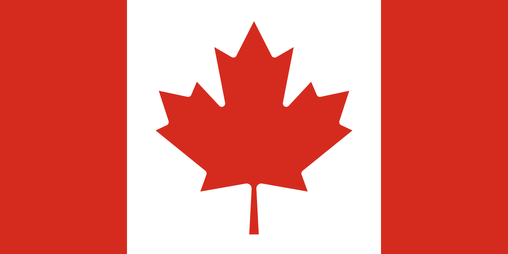

Canadá
 O Canadá, oficialmente chamado de Canadá, é o segundo maior país do mundo em extensão territorial, com cerca de 9,98 milhões de km², localizado na América do Norte e fazendo fronteira apenas com os Estados Unidos ao sul e com o estado do Alasca a noroeste. Sua capital é Ottawa, localizada na província de Ontário, enquanto cidades como Toronto, Vancouver, Montreal e Calgary se destacam por sua relevância econômica, cultural e populacional. O país é conhecido por sua enorme diversidade geográfica, incluindo as Montanhas Rochosas, as vastas planícies do interior, centenas de milhares de lagos e rios, além de regiões árticas ao norte. Com uma população de aproximadamente 39 milhões de habitantes, o Canadá possui uma sociedade multicultural, resultado da imigração ao longo dos séculos, com comunidades de origem britânica, francesa, asiática, africana e indígena. O país é membro da ONU, G7, G20, OTAN e da Commonwealth, sendo reconhecido por sua estabilidade política, economia desenvolvida e alto índice de qualidade de vida.
História
A história do Canadá começou com a presença de povos indígenas, como os Inuit, Métis, Cree e Haida, que habitavam o território há milhares de anos, desenvolvendo culturas complexas, sistemas de governo e comércio regional. No século XVI, exploradores europeus, principalmente franceses e britânicos, chegaram ao território em busca de riquezas e novas rotas comerciais. A colonização francesa se concentrou na região de Quebec e ao longo do rio São Lourenço, estabelecendo vilas, fortificações e um sistema agrícola baseado na produção local. Os britânicos, por sua vez, ocuparam áreas do Atlântico e expandiram suas colônias, levando a conflitos como a Guerra dos Sete Anos, que culminou na transferência do controle do Canadá da França para a Grã-Bretanha em 1763.
No século XIX, o Canadá começou a se organizar politicamente, com a formação de províncias e o estabelecimento da Confederação em 1867, criando o Domínio do Canadá, uma federação autônoma dentro do Império Britânico. Durante o século XX, o país conquistou plena independência legislativa com o Estatuto de Westminster em 1931 e completou sua soberania total com a aprovação da Lei Constitucional em 1982. A história canadense é marcada por negociações com povos indígenas, imigração em massa, desenvolvimento econômico baseado em recursos naturais e industrialização, além de participação em conflitos globais, como as duas guerras mundiais, consolidando sua posição como país democrático, pacífico e plural.
Cultura
A cultura canadense é marcada pela diversidade e pela convivência de múltiplas identidades culturais. O país possui duas línguas oficiais, inglês e francês, refletindo a herança colonial e a presença histórica de comunidades francófonas, especialmente na província de Quebec. A música, o cinema, a literatura e as artes visuais são profundamente influenciadas tanto pelas tradições europeias quanto pelas culturas indígenas e imigrantes. Festividades nacionais, como o Dia do Canadá e o Carnaval de Quebec, celebram a história e a diversidade cultural do país. Além disso, esportes como hóquei no gelo e lacrosse são símbolos da identidade canadense, representando paixão, tradição e espírito comunitário.
A gastronomia canadense também reflete sua diversidade regional, com pratos típicos como poutine em Quebec, tortas de maçã, xarope de bordo e frutos do mar nas regiões atlânticas. Nas artes literárias, autores como Margaret Atwood, Alice Munro e Michael Ondaatje conquistaram reconhecimento internacional, abordando temas que vão da identidade cultural à história social do país. A arquitetura combina estilos históricos coloniais com edifícios modernos, destacando-se marcos como o Parlamento em Ottawa, o Château Frontenac em Quebec e arranha-céus em Toronto. O Canadá é um exemplo de país multicultural, onde políticas de integração e preservação cultural convivem, promovendo tolerância e diversidade.


Clima
O Canadá apresenta grande diversidade climática devido à sua vasta extensão territorial. O sul do país possui clima temperado, com estações bem definidas e verões quentes, sendo ideal para agricultura e urbanização. As regiões norte e árticas apresentam clima polar, com invernos longos e rigorosos, cobertos de neve e temperaturas extremamente baixas. O clima continental predomina no centro, enquanto o litoral do Pacífico, especialmente em Vancouver, possui clima oceânico, com invernos amenos e chuvas frequentes. Essa diversidade climática influencia a flora, fauna, economia e modos de vida das populações regionais, tornando o Canadá um país de extremos climáticos e paisagens únicas.
Biodiversidade
O Canadá possui uma biodiversidade rica e diversa, com florestas boreais, tundras árticas, montanhas rochosas e inúmeros lagos e rios. O país é lar de espécies como ursos, alces, castores, caribus e aves migratórias. Parques nacionais como Banff, Jasper e Wood Buffalo protegem ecossistemas frágeis, promovendo a conservação da fauna e flora, pesquisas científicas e turismo sustentável. A diversidade natural canadense também inclui recursos hídricos abundantes, florestas densas e paisagens de grande valor ecológico.
Apesar de sua riqueza natural, a biodiversidade enfrenta ameaças como desmatamento, mudanças climáticas e poluição. A proteção ambiental é uma prioridade nacional, garantindo o equilíbrio ecológico, a preservação de espécies ameaçadas e a sustentabilidade dos recursos naturais para as futuras gerações, mantendo o Canadá como referência global em conservação ambiental e qualidade de vida.


Cidades
As cidades canadenses refletem a diversidade cultural, econômica e geográfica do país. Toronto, a maior cidade, é o centro financeiro e multicultural, enquanto Vancouver é conhecida pela beleza natural, economia dinâmica e qualidade de vida. Montreal, na província de Quebec, destaca-se pela cultura francófona, gastronomia e festivais internacionais, sendo um polo de arte e educação. Ottawa, a capital federal, abriga instituições governamentais, museus e uma arquitetura moderna integrada à história do país. Outras cidades como Calgary, Edmonton, Quebec City e Halifax contribuem com economia regional, inovação tecnológica e diversidade cultural.
As cidades canadenses desempenham papel central no desenvolvimento econômico, social e cultural, sendo centros de comércio, indústria, educação e cultura. A urbanização é planejada, valorizando sustentabilidade, transporte público e preservação ambiental, refletindo a prioridade canadense em qualidade de vida e integração social. Essa combinação de tradição, modernidade e diversidade faz do Canadá um país reconhecido mundialmente pelo equilíbrio entre desenvolvimento e respeito ao meio ambiente.